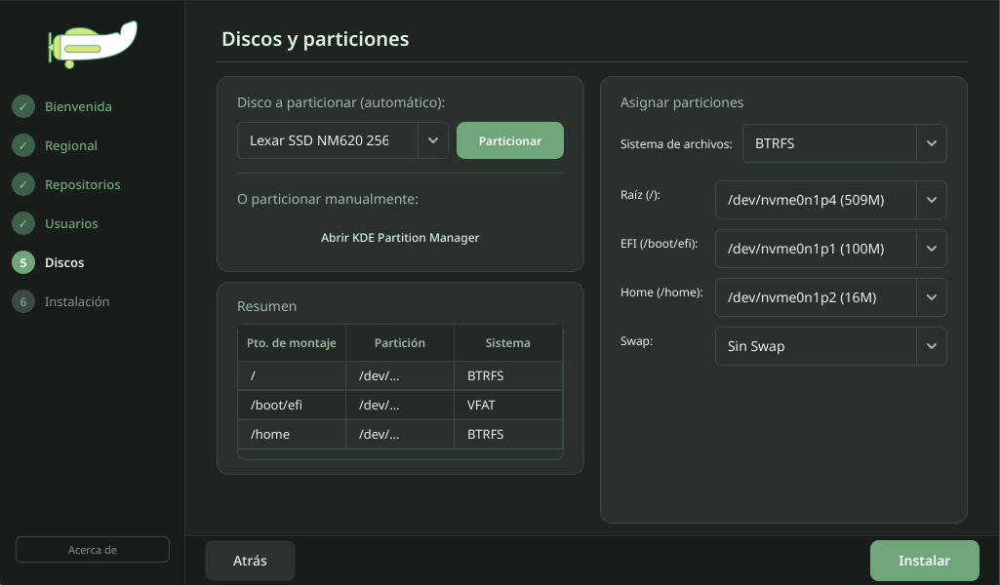

Mi desarrollo principal
Kron Installer
Instalador gráfico de CuerdOS Linux
Desarrollo el instalador gráfico de CuerdOS a partir de la base del instalador de Void Linux, adaptándolo y ampliándolo para las necesidades del proyecto.
Construido con Python y PySide6, utiliza scripts Bash para realizar las tareas de configuración e instalación: configuración regional, repositorios, usuarios, particionado e instalación.
Hoy está en un nivel de acabado alto, con un diseño cuidado y muy pulido. Gestiona autologin, ofrece cifrado LUKS e instala Limine en lugar de GRUB. Sigue en desarrollo activo.
